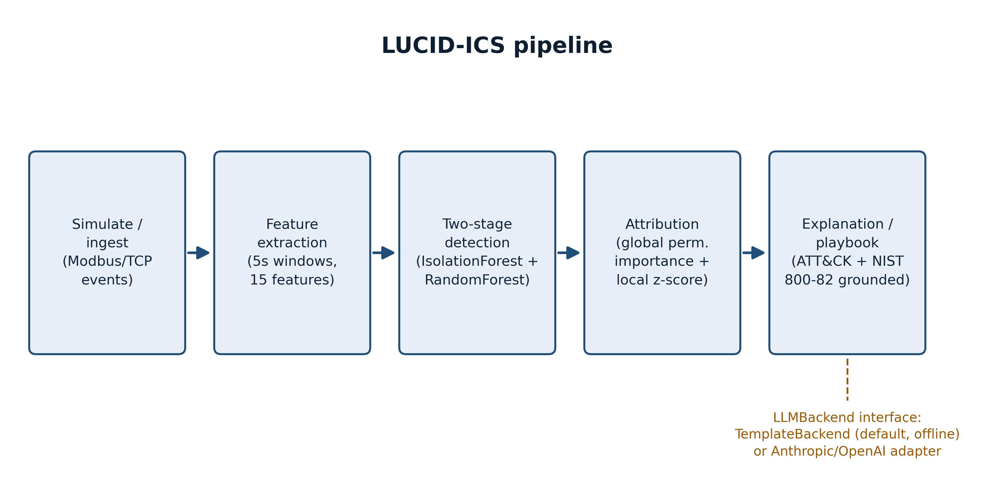
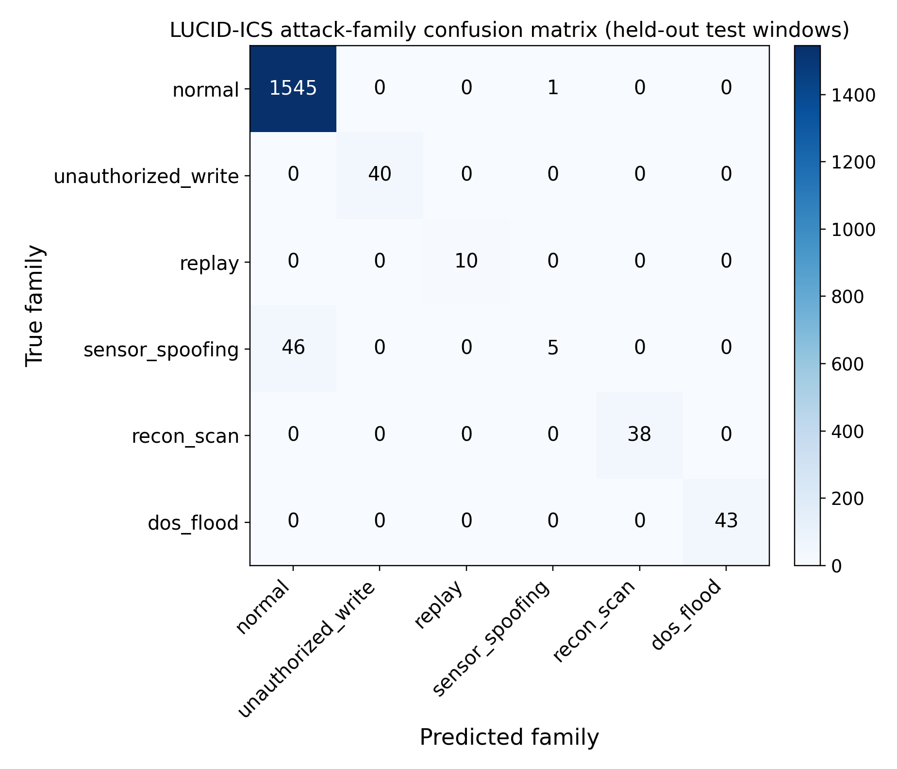
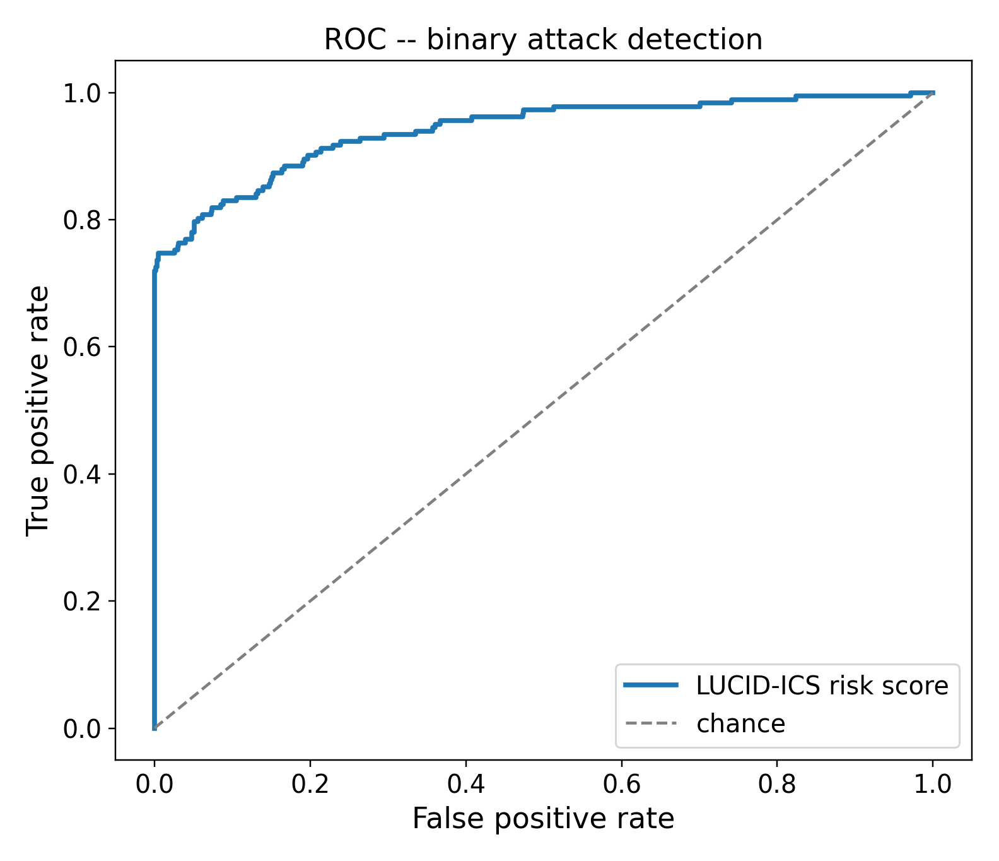
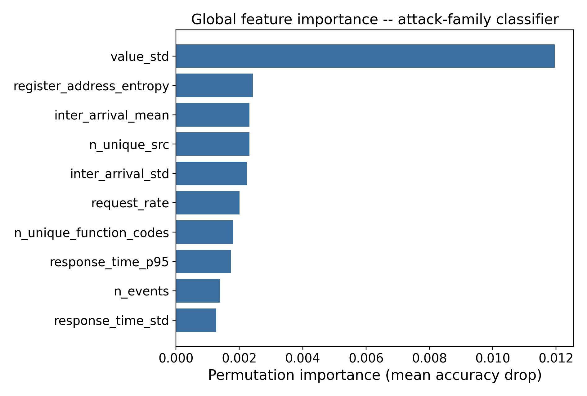
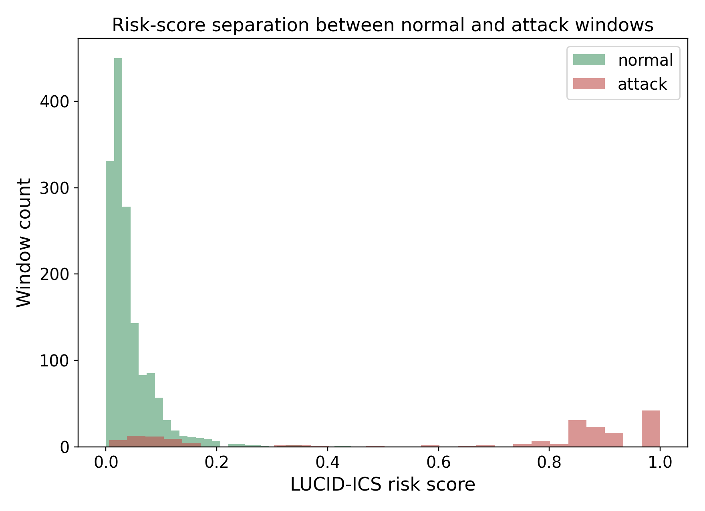

LUCID-ICS pairs a conventional, fully-offline ML anomaly detector for SCADA/ICS traffic with a knowledge-grounded explanation layer — MITRE ATT&CK-mapped, NIST 800-82-aligned, and ready to hand off to any LLM — so every alert resolves to something a control-room operator can actually check and act on.
Five stages, each an independently testable module. The only stage that ever touches an LLM is the last one — and it doesn't have to.
Simulate/ingest → feature extraction → two-stage detection → attribution → knowledge-grounded explanation.

An Isolation Forest novelty score and a class-balanced Random Forest attack-family classifier run entirely offline, trained on a time-block split so nothing from the test period leaks into training. Their outputs are combined into one risk score that only goes high when a window is both statistically unusual and confidently matched to a known attack pattern — which is what keeps precision at 0.993 across ten independent trials.
Every alert then gets a local attribution (which features deviated, and by how much, from the learned normal-traffic baseline) and a MITRE ATT&CK for ICS mapping, verified technique-by-technique against attack.mitre.org rather than recalled from memory.
Narrative generation sits behind a one-method LLMBackend
interface. The reference implementation is a deterministic, offline TemplateBackend
— no API key, no network call, and what every result on this page was measured with.
AnthropicBackend and
OpenAIBackend are working
adapters for sites that want a live-LLM narrative instead. We built them; we didn't have API
credentials in the build environment to evaluate them — so we say exactly that, instead
of reporting numbers we don't have.
Synthetic Modbus/TCP traffic, five injected attack families, 10% of simulated time under attack, 60/40 time-block train/test split. Figures below are from the representative trial (seed 1000).
Four of five families classified essentially perfectly.

AUC 0.941 this trial (mean 0.959 across all ten).

Within-window value variability dominates — and explains the gap below.

Well separated at the population level, with a visible low-risk attack tail.

Sensor-spoofing (slow-onset sensor drift) is detected far less reliably and far less consistently than the other four families — mean recall 0.39 ± 0.22 across ten trials, ranging from 0.04 in the worst trial to 0.76 in the best, versus ≥ 0.98 mean recall for every other family. Our per-window statistical features compare each 5-second window to a baseline in isolation; they don't track a trend accumulating gradually across windows, which is exactly how our spoofing attack is designed. This is a real architectural gap, reported because we found it, not smoothed over because it's inconvenient. Section VI of the paper discusses two concrete fixes: cross-window sequential features, and independent sensor cross-validation.
Verbatim output from the deterministic template backend on a real detected window — not a mockup, not an LLM-polished example.
Accepted for publication, IEEE MILCOM 2026 Workshop on Industrial Control Systems and Critical Infrastructure Security (ICSCI), camera-ready
This work has been submitted to the workshop's review process and is not yet publicly released. The manuscript, full abstract, and citation details will be posted here after the venue's review outcome, in line with the workshop's submission policy. Everything that isn't the manuscript itself — the framework, the experiment harness, the raw metrics, and every figure on this page — is already public in the repository below, and was produced entirely by the open-source code linked there.
MIT licensed. No API key required to run the full pipeline and reproduce every number on this page.
# install pip install -e . # run the CLI on 1 hour of simulated traffic python -m lucid_ics.cli --duration 3600 # reproduce every number/figure on this page python experiments/run_experiment.py \ --config experiments/configs/default.yaml
from lucid_ics.explain import AnthropicBackend # requires ANTHROPIC_API_KEY + `pip install anthropic` backend = AnthropicBackend(model="claude-sonnet-5") # pass backend=backend to run_pipeline(...)
Synthetic-data evaluation. Every number on this page is on our original synthetic testbed, not captured OT traffic or a public benchmark. The paper's Discussion section explains exactly what evaluating against SWaT/WADI would require.
No live-LLM results. The Anthropic/OpenAI backends are implemented and working, not evaluated — no API credentials were available in the build environment, and we did not fabricate narrative-quality numbers to fill that gap.